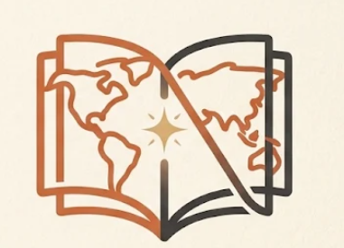

Fantasi
oke
- Total Bab
- 2 Bab
- Status
- Sedang Berjalan
Sinopsis
oke aja sih
Arsip cerita
Daftar Bab
0 bab · 0 terbit
Belum ada bab untuk novel ini.

Fantasi
oke aja sih
Arsip cerita
0 bab · 0 terbit
Belum ada bab untuk novel ini.